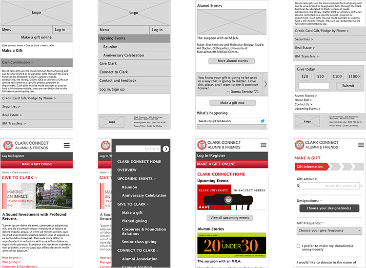

Clark University Give Page Redesign

Introduction
Clark University's website has featured an alumni and donation information page in some form for over twenty years. The most recent version of this, called ClarkConnect, combines all of the above with the ability to make online donations. However, ClarkConnect current page is now outdated, and looks horrible on mobile. This project is a re-design of the onlinedonation forms from a mobile first perspective, completed as a project for Springboard's UX Design Workshop.

Problems of current pages:
The ClarkConnect site aims to keep connections to alumni and attract more people to contribute to the university. The current website is not able to reach the marketing goal. Even though the whole site contains lots of valuable information, the home page doesn’t open doors or provides routs to those topics. It is hard for users to find information they want from this site. The donate form is outdated and hard to use as well.
Approaches
Tasks
- Rebuild home page
- For marketing purpose
- User centered redesign
- Rebuild sitemap and menu
- Rebuild the information architecture for the site
- Rebuild the give (donate) form
- User centered redesign
Approaches
| Approaches | Home Page | Sitemap | Give Form | |
|---|---|---|---|---|
| User Research | Interview and survey | ✓ | ✓ | |
| Peer school donate form comparison | ✓ | |||
| Empathy map and persona | ✓ | ✓ | ✓ | |
| MVP and user stories | ✓ | ✓ | ✓ | |
| Information Architecture | Card sorting | ✓ | ||
| Sitemap | ✓ | |||
| User flow | ✓ | ✓ | ||
| Visual Design | Wireframe | ✓ | ✓ | |
| Style guide | ✓ | ✓ | ||
| Prototype | ✓ | ✓ | ||
| Usability Testing | ✓ |
User Research
User research helped me to define who are the users, understand their feeling and attitude of making donations and ideally find the motivations behind their behaviors. In addition, it also helped me to find flaws of the current website and potential ways to fix them.
From interviews and surveys I got my first-hand information. My goal was to:
- Define who are the users and what features they have;
- Find out what they might be interested from the alumni site;
- Know reasons, opinions and thoughts from them about making donations;
- Find out what will convert the thought into behavior and how to make one time action into a regular behavior.
There were around 30 people participated in the survey and 5 people involved in the personal interview. The research helped me clarify the target users. I created the empathy map and two personas based on their age range, life status, current goals and their connections to the university.
I also created user stories to keep wireframes and visual design focused on user needs. This chart not only includes two types of donors but also specifies their needs at different stages.


Want to know more about the user research result? Here are the shortcuts to each part:
Interview & Survey Report » Competitor Analysis » Empathy Map & Persona » MVP & User Stories »
Information Architecture
IA is for the sitemap. As it mentioned above, the current website has abundant information but hard for people to spot. Reorganize IA will be the solution. This part, I invited 3 participants for card sorting and created the sitemap afterwards.
In the card sorting, the logic behind everyone’s categorizing is different, which lead to 3 complete different final results. I put their sorting data in the spreadsheet and eventually built a sitemap. Ideally, I should have shown my sitemap to the 3 participants and tested if they could find certain information on the map, but with the tight timeline I did not complete this iteration.


Let’s take one step back. with the help of the user story above, I built the user flow (up-right picture). This flow starts with the potential donors accessing the donate form from different sources. They will go through the form and experience login info match, auto fill, info confirming and subscribing the newsletter. People who got newsletter would get more chance to donate again next time.
Visual Design
I started with low-fidelity sketches and worked up to high-fidelity wireframes. I then create the prototype and put it into InVision for usability testing.

Style Guide
This style guide includes a color palette, typography and button styles for my proposed redesign.

Usability Testing
Usability tests were conducted in-person with 5 Clark alumni. From the test and feedback, I categorized problems from deadly to dispensable and improved the prototype.
- Page – Breadcrumbs
It is nice to have breadcrumbs on the page, but first, they look small and hard to press for fat fingers; second, this site is not so big that we have to put breadcrumbs on each page. Instead, when people click the menu, they will easily find where they are. - Page – Readability
The font size is small for older users. It is better not to put a picture and a paragraph at the same row. - Form – Choose your designation button
Even though designation is a required field, participants ignored it and jumped to the gift frequency directly. It was because the button was white, they were all attracted by the gray dropdown menu. - Form – Distraction
When users are filling out the form, you don’t want them to be distracted by other things. Log in/register will bring them out of the process.


Additional Steps
This project focused on a small but important aspect of the ClarkConnect website, the online donation form UI, but in the process also revealed many new ideas that could be incorporated into the overall UX for alumni and friends. Based on the data collected so far, my top 3 recommendations for the site would include:
- Shorter, more frequent user surveys to make basic UI improvements faster (the MVP for this project)
- A/B testing based on projected donation amounts
- Incorporate participatory design into ClarkConnect website to drive more traffic to the site